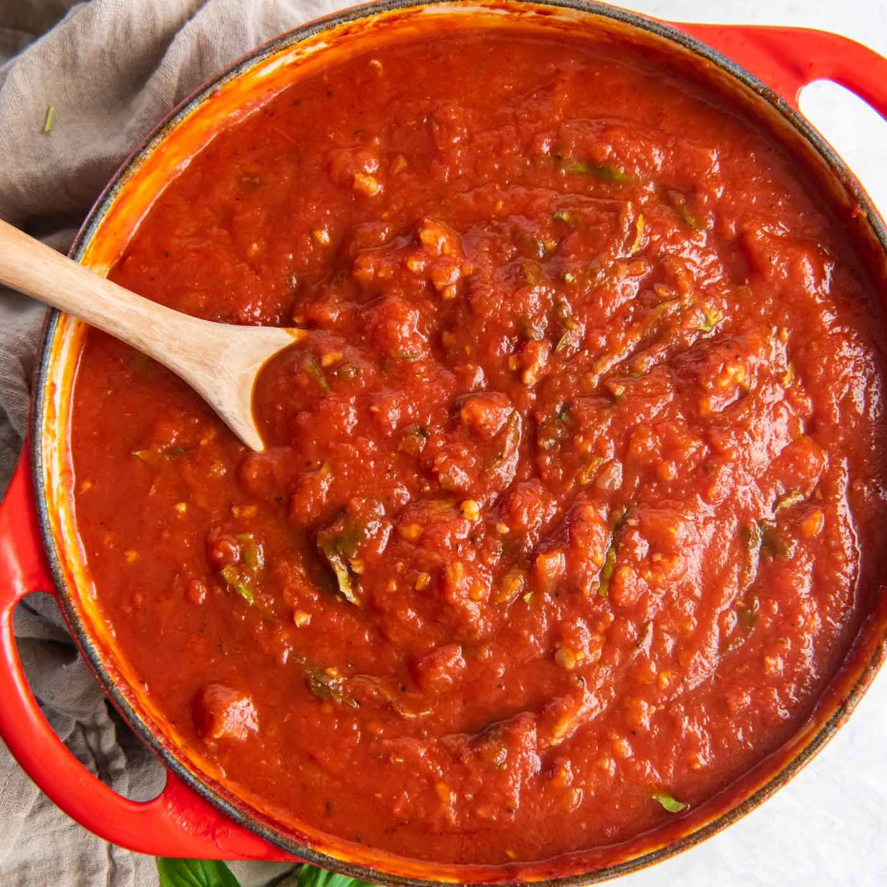

Spaghetti
Origin: Italian
Source: Own Recipe
Category: Main Dish

Spaghetti is a long, thin, cylindrical pasta of Italian origin, made from durum wheat semolina. It is one of the most popular varieties of pasta and is a staple food in traditional Italian cuisine. Typically served with a sauce, spaghetti can be paired with a wide range of ingredients such as tomatoes, olive oil, garlic, meat, and vegetables to create dishes like spaghetti alla Bolognese, which includes a meat-based sauce, or spaghetti aglio e olio, a simple dish made with garlic, olive oil, and chili flakes.
Recipe Ingredients
- Dry spaghetti noodles
- Pasta Sauce
- Cheese
Recipe Steps
- In a pan, add the pasta sauce and just enough water to cover the bottom of the pan. Bring the mixture to a boil.
- Add the spaghetti noodles to the pan and cook according to the packaging instructions
- Once the noodles are cooked, plate on a pan and add cheese on top
Additional Food Images

Swedish Pancakes
Origin: Sweden
Source: Kristi
Category: Breakfast

Swedish pancakes, known as "pannkakor," are thin, crepe-like pancakes made from a batter of eggs, milk, and flour, often lightly sweetened with sugar. They are traditionally served with lingonberry jam and a dusting of powdered sugar, offering a delightful balance of sweetness and tartness that distinguishes them from their thicker, fluffier American counterparts.
Recipe Ingredients
- Butter
- Sugar
- Eggs
- Vanilla
- Milk
- Water
- Salt
- Flour
Recipe Steps
- Combine all ingredients in a blender and blend until completely smooth.Transfer to the refrigerator to rest for at least 2 hours or up to 2 days.
- Preheat the oven to 200 degrees if you plan to eat the pannkakor right away. Heat a 10 inch nonstick skillet over medium heat. Stir the batter briefly to recombine. Brush skillet with melted butter. Pick the skillet up off of the burner and quickly add ¼ cup of batter. Immediately begin swirling the batter around the skillet so that it coats the bottom of the pan. Continue swirling until the batter is just set. Return skillet to the burner. Cook until the pancake is golden brown in spots on the bottom, about 30 seconds. Use a thin spatula to loosen the pancake, flip it over continue to cook on the other side for about 30 seconds. Transfer to a plate. Cover with foil and transfer to oven to keep warm and repeat with remaining batter, wiping out skillet in between pancakes with paper towel as needed.
- Serve with lingonberry jam and butter (see note below) or other desired toppings and/or fillings. See notes below for more information about making ahead of time and storing in the refrigerator or freezer.
Additional Food Images

Mac and Cheese
Origin: Northern Eurpoe
Source: Mac and Cheese Recipe
Category: Main Dish

Macaroni and cheese, commonly known as mac & cheese, is a comfort food staple that has captured the hearts of people all over the world. Originating from Europe and popularized in the United States, this dish consists of elbow macaroni pasta smothered in a creamy cheese sauce. The simplicity of its ingredients—pasta, cheese, and often a touch of butter or milk—belies a rich, complex flavor that has made it a favorite for both quick weeknight dinners and festive holiday gatherings.
Recipe Ingredients
- Macaroni
- Butter and flour
- Milk
- Cheese
- Seasonings
- Bread crumbs
Recipe Steps
- Preheat oven to 375°. Grease a 13"x9" baking dish with butter. In a large pot of boiling salted water, cook macaroni, stirring occasionally, until al dente, 5 to 6 minutes. Drain.
- In a large saucepan over medium heat, melt 1 stick butter. Sprinkle flour over and cook, stirring, until slightly golden, 2 to 3 minutes. Pour in milk and whisk until combined. Add mustard powder; season with salt and pepper. Bring to a simmer over medium-high heat and cook, stirring, until sauce starts to thicken, about 2 minutes.
- Remove pan from heat and whisk in cheddar, Gruyère, and 1 cup Parmesan until melted and smooth. Stir in macaroni and transfer to the prepared dish.
- In a small bowl, combine panko, oil, and remaining 1/2 cup Parmesan. Sprinkle over macaroni; season with more pepper.
- Bake mac and cheese until bubbly and golden, 25 to 30 minutes. Let cool for 10 minutes.
Additional Food Images